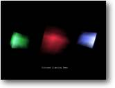

6. Iluminação Objetivo: Iluminar uma cena |
 |
Agora que já
podemos mover objetos (e nós mesmos), texturizar objetos, animar... então
o que faremos agora?
Que tal iluminação? Usada corretamente nós podemos fazer
nosso pequeno mundo ganhar uma melhor ambientação.
Por padrão, o B3D já nos dá uma luz em nossa cena, apontando
diretamente na tela. Pense nisto como uma tocha presa em cima da câmera,
iluminando tudo o que podemos ver.
Código-fonte:
| Graphics3D 800,600 SetBuffer BackBuffer() camera=CreateCamera() CameraViewport camera,0,0,800,600 AmbientLight 0,0,0 ;cube 1 cube=CreateCube() PositionEntity cube,0,0,5 light=CreateLight(3) LightColor light,100,20,30 LightConeAngles light,0,45 PositionEntity light,0,0,0.5 LightRange light,8 PointEntity light,cube ;cube 2 cube2=CopyEntity(cube) PositionEntity cube2,-5,0,8 light2=CreateLight(3) LightColor light2,40,150,60 LightConeAngles light2,0,45 PositionEntity light2,-5,0,4.5 LightRange light2,8 PointEntity light2,cube2 ;cube 3 cube3=CopyEntity(cube) PositionEntity cube3,5,0,8 light3=CreateLight(3) LightColor light3,70,80,190 LightConeAngles light3,0,45 PositionEntity light3,5,0,4.5 LightRange light3,8 PointEntity light3,cube3 While Not KeyHit(1) TurnEntity cube,0.1,0.2,0.3 TurnEntity cube2,0.3,0.2,0.1 TurnEntity cube3,0.3,0.2,0.1 UpdateWorld RenderWorld Text 310,500,"Demonstração de Iluminação" Flip Wend End |
Há vários
comandos novos a serem observados aqui.
Se lembre daquela tocha sobre a qual eu falei? Bem o primeiro comando novo que
nós aprenderemos é estritamente por mudar a cor dessa luz.
| AmbientLight 0,0,0 |
Isto deixa a luz ambiente na cor preto (sem luz), de forma que qualquer luz
adicional que nós usarmos terá seu efeito maximizado. A primeira
coisa a se lembrar é que quando usamos este comando os valores de cor
variam de 0 a 255, e nós temos 3 cores separadas: VERMELHO, VERDE &
AZUL. (RGB, igual a uma TELEVISÃO)
Mudando estes valores nós podemos conseguir qualquer cor que nós
quisermos, como dexiar tudo em 255 resultará na cor branca. É
normalmente mais fácil trabalhar com estes valores em um programa de
desenho como o Paintshop Pro.
| light=CreateLight(3) |
O B3D nos deixa usar três tipos diferentes de luzes. Como com a instrução Animate estes são selecionados com parâmetros. Eles são:
| 1: LUZ DIRECIONAL - Como a luz
do Sol, que ilumina tudo para onde ela aponta. 2: PONTO DE LUZ - Como uma lâmpada, iniciando em um ponto e enfraquecendo ao redor 3: CONE DE LUZ- Como uma tocha, se inicia em um ângulo e termina em outro ângulo maior. |
Para esta demonstração eu escolhi usar a forma CONE DE LUZ.
| LightColor light,100,20,30 |
O mesmo que na instrução AmbientLight, este comando nos deixa selecionar a cor da luz. Aqui eu defini na forma VERMELHO=100, VERDE=20 e AZUL=30 que nos dá um brilho avermelhado agradável.
| LightConeAngles light,0,45 |
Nós usamos esta instrução para controlar o ângulo de luz que vem de nosso refletor. Neste caso eu fixei em 45 graus. Em outras palavras: A luz tem um raio de 45 graus, qualquer parte do objeto que está fora disto não será iluminada.
| PositionEntity light,0,0,0.5 |
Posicionamos a luz.
| LightRange light,8 |
Isto controla o alcance da luz, que eu fixei em 8 unidades. Se eu quisesse que a luz iluminasse mais distante então eu aumentaria este valor.
| PointEntity light,cube |
Este comando apontará a luz para nosso cubo. Não importa onde a luz esteja, ela apontará para o cubo. Mas se depois você move o objeto ou a luz então você terá que reapontar com este comando.
Outra coisa que
você deve ter em mente é se a luz e objeto podem ver um ao outro.
(dependendo do alcance da luz)
Eu não entrarei
em detalhes no resto do programa. Você deve ser capaz de entender o que
está acontecendo sem ajuda adicional.
Onde estão os efeitos de raios de luz? Bem, no momento o B3D não
tem nenhum comando embutido para isso - sendo assim você mesmo tem que
programar isso. E acredite em mim, é possível com pouco esforço.
Eu vi alguns dos testadores beta fazendo efeitos de iluminação
que se igualam a Unreal! Mas esse é assunto para outro tutorial...